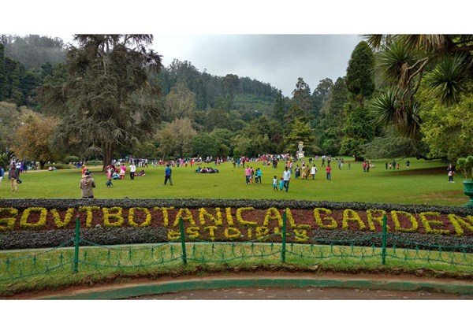
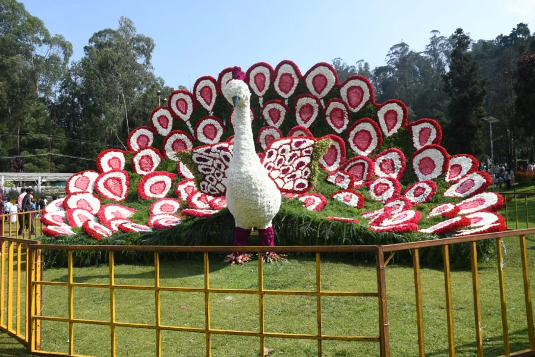
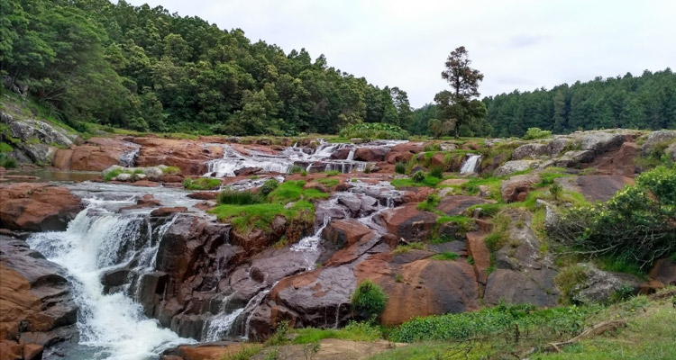

Key Attractions
Ooty Botanical Gardens

Walking into the Ooty Botanical Gardens feels like stepping into a lush oasis. The air is filled with the sweet scent of flowers, and the vibrant colors of exotic plants paint a picture-perfect scene. Strolling along the winding paths, you can't help but marvel at the sheer diversity of flora on display. From towering trees to delicate ferns, each corner reveals a new botanical wonder. Sitting by the lotus pond or under the shade of a centuries-old tree, you feel a profound sense of tranquility and connection with nature.
more...
The Government Botanical Garden is a botanical garden in Udhagamandalam, near Coimbatore (Ooty), Tamil Nadu state, India laid out in 1848. The gardens, divided into several sections, cover an area of around 22 hectares (54 acres), and lie on the lower slopes of Doddabetta peak. The garden has a terraced layout. It is maintained by the Tamil Nadu Horticulture Department. The present botanical gardens are divided into six sections: Lower Garden, New Garden, Italian Garden, Conservatory, Fountain Terrace and Nurseries.
Lower Garden
Botanical map of Indian states The lower garden comprises the entrance and the lower lawns. The entrance of the garden leads into an extensive lush green lawn of Kikiyu grass (Pennisetum Clandestinum) which is known for its springy vigour. A fern house with 127 species of ferns is situated on the left along the road leading to Raj Bhavan amidst another expanse of lawns and historic gatehouses. The prime attractions in this section are the carpet-bet design of the map of the Indian Union laid out with selective plants and the fossil trunk of 20 million years old, erected on a pedestal.New Garden
The new garden developed recently, comprises the area between the front garden and the crescent-shaped pond at the bandstand. This section consists of: A rose garden with three hundred varieties of hybrid tea roses, Floribunda and Polyanthas rose varieties. Large number of flowerbeds designed to match the slopes and contour of this area. Carpet-bed emblems of the Government of Tamil Nadu and the Government of India. Natural ponds with aquatic plants.Italian Garden
This garden was first laid out by Italian prisoners of World War I, who were shifted to Ooty. They were placed under the control of the Military station in Ootacamund. Asters, ageratum, balsam, begonia, petunia, pansy, phlox, cosmos, zinnia and perennial flowers like salvia, delphinium, larkspur, and dahlia are the main attraction in this gardenThe Conservatory
The public conservatory was constructed in 1912 with the objective of grouping various flowering plants. Colourful annuals and perennials like Cineraria, Schizanthus, Calceolaria, Balsam, Cyclamen, Gloxinia, Tuberous begonia, Coleus, Geranium, Chrysanthemum, Primulas, Tydea, Achemenes, etc., find a place in this conservatoryThe Nurseries
The nurseries which are about 100 metres above the lower lawns, consist of eight glass-houses and a series of terraces for introduction and breeding of exotic plants. The glass-houses are utilized for growing Begonias, Ferns, Cacti, Succulents, Orchids and Bulbous plants for providing a continuous supply of potted plants to be grouped periodically in the conservatories. The terraces are utilised for growing plants for cut flowers, seed and also for trial purposes.The Flower Show
The first flower show was first organised in the year 1896 by the chairman of the Nilgiris Agri-Horticultural Society, Mr.J.H.Tremenhere, the then Collector of Nilgiris. The government took over the flower show from the Nilgiris Agri-Horticultural Society in 1980 by forming a committee called the Nilgiris Flower and Fruit Show Committee. The flower show attracts about 150,000 tourists each year from all over the world.Ooty Lake

Boating on Ooty Lake is an experience straight out of a postcard. As you glide across the crystal-clear waters, surrounded by emerald hillsides, every moment feels like a painting come to life. The gentle breeze carries laughter and chatter from fellow boaters, adding to the joyful atmosphere. Whether you opt for a pedal boat or a leisurely rowboat, the serenity of the lake casts a spell, transporting you to a world where time seems to stand still.
more...
Boat House
The boat house, which adjoins the lake, was opened by the Tamil Nadu Tourism Development Corporation (TTDC). Boating is the prime attraction at the lake. The boat house offers boating facilities with paddle boats, row boats, and motorboats. It also features a garden, a mini-train, and an amusement park. Other notable features include a canteen run by the TTDC and pony rides in front of the boat house. Fun activities inside Ooty Lake include a mini-train (especially for kids), a 7D cinema, horror and mirror house, dashing car, break-dance, and Columbus ride. Other things to do nearby Ooty Lake include horse rides and cycling.Doddabetta Peak

Standing atop Doddabetta Peak, you're on the roof of the Nilgiris, with the world stretching out before you in all its breathtaking glory. The cool mountain air invigorates your senses as you gaze upon a patchwork quilt of lush green valleys and mist-shrouded peaks. The distant calls of birds and the rustle of leaves provide a soothing soundtrack to your reverie. Telescopes dotted along the viewpoint offer glimpses into distant landscapes, each frame more captivating than the last.
more...
Telescopic House
There is an observatory at the top of Doddabetta with two telescopes available for the public. It was opened on 18 June 1983 and is run by the Tamil Nadu Tourism Development Corporation (TTDC). The average number of viewers in 2001-2002 was 3500 per day in the season and 700 per day in the off-season.Rose Garden

Stepping into the Rose Garden is like entering a fragrant wonderland. Rows upon rows of roses in every hue imaginable greet you, their delicate petals swaying in the gentle breeze. The air is alive with the heady scent of roses, transporting you to a realm of pure sensory delight. Amidst the blooms, you find yourself lost in a maze of beauty, each variety more enchanting than the last. As you meander through this floral paradise, time seems to slow down, allowing you to savor every moment of this botanical bliss.
more...
The Government Rose Garden located in the heart of Ooty is one of the largest rose gardens in India and also a popular tourist attraction. The garden is spread across 10 acres of land and houses some of the largest collections of roses in the country including miniature roses, hybrid tea roses, floribunda, ramblers, black and green roses and many other unique varieties. Initially, when the gardens were developed, 1,919 varieties of roses with 17,256 rose plants were planted. Today there are more than 20,000 varieties of roses of 2,800 cultivars. It is one of the largest collections of roses in India.
Nilgiri Mountain Railway

Boarding the Ooty Toy Train is like stepping back in time to a bygone era of steam-powered romance. As the train chugs its way through verdant valleys and misty hillsides, you're treated to a spectacle of unparalleled beauty. Peering out of the window, you drink in the panoramic vistas unfolding before you, each curve of the track revealing a new scenic marvel. The rhythmic clack-clack of the wheels on the rails lulls you into a state of blissful reverie, making this nostalgic journey an experience you'll cherish forever.
more...
The uphill journey takes around 290 minutes (4.8 hours), and the downhill journey takes 215 minutes (3.6 hours). It has the steepest track in Asia with a maximum gradient of 8.33%. During Meter Gauge era in 1990s, The Nilgiri Express used to run between Chennai(then Madras) & Udhagamandalam(then Ooty) directly. Timings were:- Madras 21.00; Ooty 10.20 & in return:- Ooty 16.30; Madras 05.50.But it was stopped after NMR got UNESCO World Heritage Tag in 1994. As of 2007, a daily train crosses the rack section, which starts from Mettupalayam at 07:10 and reaches Udhagamandalam at noon. The return train starts from Udhagamandalam at 14:00, and reaches at 17:35. The train is scheduled to connect to the Nilgiri Express, which travels from Mettupalayam to Chennai via Coimbatore. A summer special service runs in April and May, starting from Mettupalayam at 09:30 am and from Udhagamandalam at 12:15 pm. Between Coonoor and Udagamandalam, four daily trains run each way
Tea Estates

The Tea Museum offers a fascinating journey into the heart of India's tea culture. Stepping inside, you're greeted by the earthy aroma of freshly brewed tea, setting the stage for an immersive experience. Vintage machinery and artifacts tell the story of tea production through the ages, while interactive exhibits engage all your senses. From the delicate art of tea tasting to the intricate process of leaf plucking, every aspect of tea-making comes to life before your eyes. By the end of your visit, you emerge with a newfound appreciation for this humble leaf and its rich cultural heritage.
more...
The tea plantations in Ooty are also a favoured sightseeing destination, where people can visit to see how the plants are grown and how the leaves are processed and packaged. Ooty’s numerous tea plantations cascade like a green carpet, stretching across acres and meeting the blue sky like a naturally woven tapestry. It truly is a stunning sight for sore eyes. Although Ooty has several tea estates, some of which even let you stay there, none is as charming or scenic as the tea gardens on Doddabetta Road. With the Tea Factory and Tea Museum, these tea estates allow you to get the complete tea-tastic experience, laying out the history of the plantations to present-day innovations in the tea industry. The Tea Factory gives you a marvellous tour of the tea processing, done live for all to witness in amazement. The Tea Estate View Point near Doddabetta Peak is one that cannot be missed. Whether you are a connoisseur of tea or just a novice looking to enter into the flavourful world of tea, the Tea Estate View Point is one where you can gather all the information regarding Ooty’s tea estate while relishing the various flavourful concoctions crafted there!
Pykara Falls

Pykara Lake and Waterfalls are nature's playground, where every corner offers a new adventure. Whether you're cruising on the tranquil waters of the lake or chasing waterfalls through dense forests, there's never a dull moment here. The cool spray of the cascading water refreshes your spirit as you stand in awe of Mother Nature's raw power. Hiking along the rugged trails, you feel a sense of exhilaration as you discover hidden viewpoints and secret nooks tucked away in the wilderness. By the end of the day, as the sun sets behind the hills, you're left with memories that will last a lifetime.
more...
Shooting Spot

Arriving at Ooty's famed shooting spot, I was greeted by an enchanting scene of rolling hills and serene lakes. Against this picturesque backdrop, I embarked on a horse riding adventure, trotting along winding trails and verdant meadows. With each stride, I felt a sense of freedom and connection to nature, surrounded by the tranquility of Ooty's splendor. The cool mountain breeze brushed against my skin as I took in the breathtaking vistas, each turn revealing a new facet of the hill station's beauty.
more...
The Shooting Spot offers a panoramic view of the Nilgiris as well as the vast expanse of undulating meadows covered with shola and pine forests. The serene ambience of Shooting Spot, enriched with the scent of pine forests and eucalyptus, makes it a perfect spot for enjoying a picnic or a day out with friends and family. It is a perfect destination for tourists in search of a break from the fatiguing noises of urban life. The enthralling view of white fog from the nearby Mukurthi Peak gradually rolling in over the meadows grazed by white sheep is something that will sooth any numb mind. Head to the Shooting Point and have a stroll through the misty grassland and soak in the tranquillity of Nature.
The Madras Regimental Centre (MRC) Wellington
My visit to Madras Regimental Centre (MRC) Wellington, where my father serves proudly in the esteemed Madras Regiment, was a blend of reverence and pride. Amidst the disciplined routines and camaraderie, the sight of the historic Black Bridge spanning the water added a touch of nostalgia. It served as a silent witness to the rich legacy and unwavering dedication embodied by the soldiers training within MRC Wellington's hallowed grounds.
more...
The Madras Regimental Centre (MRC) Wellington
MRC Wellington Camp is located near Coonoor.The Miltary College also located next to it. The training including shooting will be given to the people who are all selected for the South Indian Army. The morphological toys of army soldiers have set at the entrance of this place. Since the summer season has begun in Ooty, the tourists coming from other states including Kerala and Karnataka who travel to Coonoor Sims Park via MRC Center are very eager to visit the morphological toys of soldiers which were set at the entrance. The special arrangements have been made here for the tourists.The tourists are permitted to take the photographs in this place. They are also allowed to visit the Army Camp from the road.The visitor's number has been increasing day by day. The tourists show more interest to take photography in this place.
The Black Bridge

The Black Bridge (now the Manekshaw Bridge) is a historic bridge in Wellington, The Nilgiris District, India. At 43.5 metres long, the bridge spans across the Mynala stream, which joins the Coonoor River 2 kilometres downstream. The bridge connects Wellington Cantonment to the Ooty - Coonoor road (NH181)